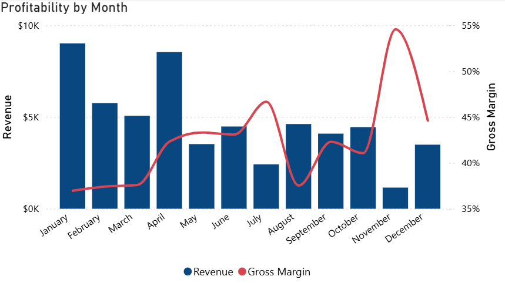

Gross Margin %
Description
Gross Margin % measures the proportion of revenue that exceeds the cost of goods sold (COGS). It indicates how efficiently a company produces and sells its products and is a key profitability metric.
Formula: (Revenue - COGS) / Revenue
Visual Example

DAX Formula
SQL Statement
Usage Notes
- Use time-based filters (e.g., Date, Month, Year) to evaluate margin trends over time.
- Pair with product, region, or channel dimensions to identify high- or low-margin segments.
- Ensure Revenue and COGS are captured consistently per transaction to avoid calculation distortions.
- Consider supplementing with net margin or contribution margin for broader profitability analysis.